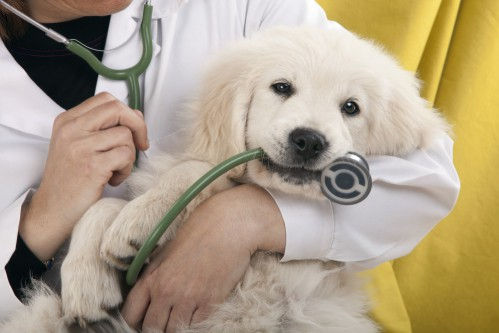

A clínica
A Clínica Cat&Dog é o fruto de um sonho de pessoas que verdadeiramente amam os animais. Somos especializados no atendimento veterinário de animais domésticos, oferecendo cuidados, acompanhamento e tratamento para a saúde e bem-estar dos pets. Também sabemos que os pets merecem todo o carinho e mimo, por isso oferecemos serviços de estética animal e produtos cuidadosamente selecionados.
Para nós, da Casa do Dog&Cat, nosso diferencial é a proximidade com nossos clientes e pacientes, nos relacionando de forma exclusiva, respeitando as características individuais.
Cuide do seu pet

Não é só quando seu bichinho fica doente que você deve levá-lo às clínicas veterinárias! As visitas regulares ao veterinário são muito importantes para tirar as suas dúvidas, dar dicas de cuidados, garantir a boa saúde do pet, sua correta higienização, a identificação precoce de doenças, o controle
de parasitas e para manter as vacinas em dia.